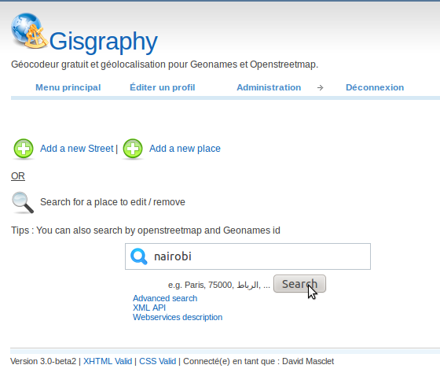
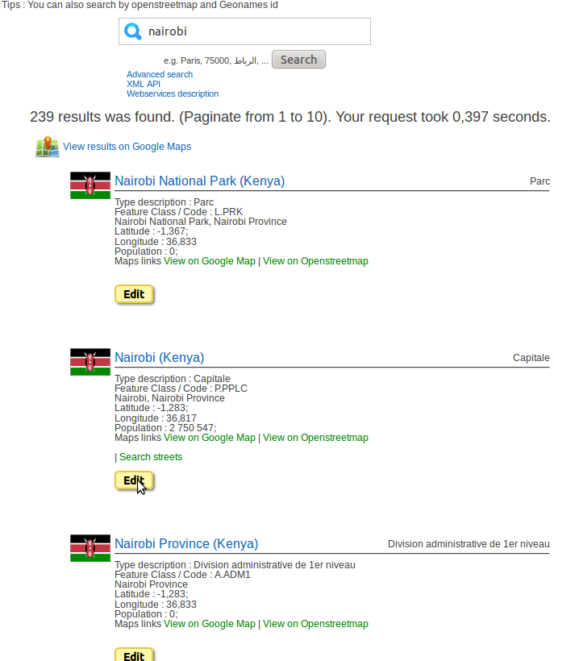
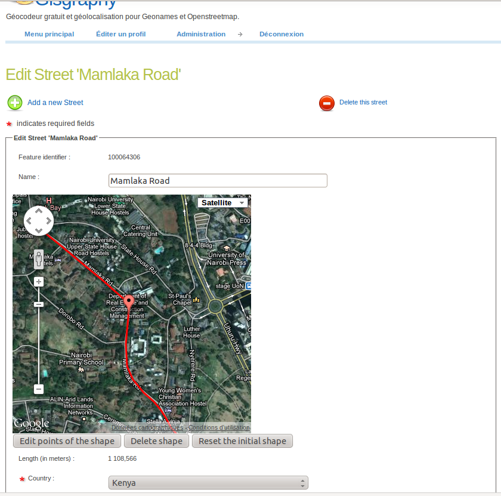
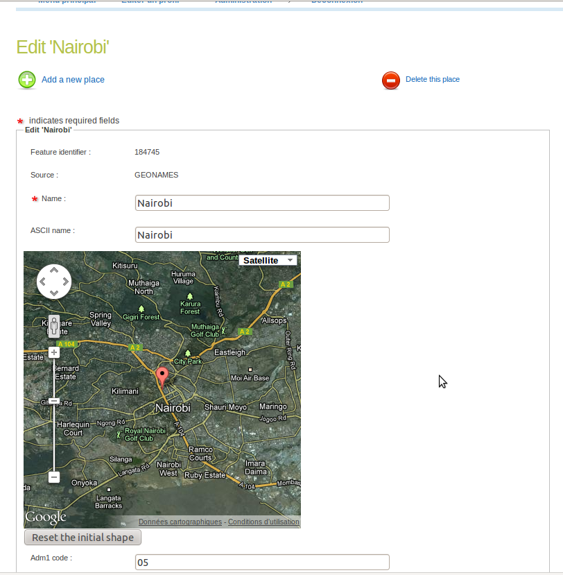
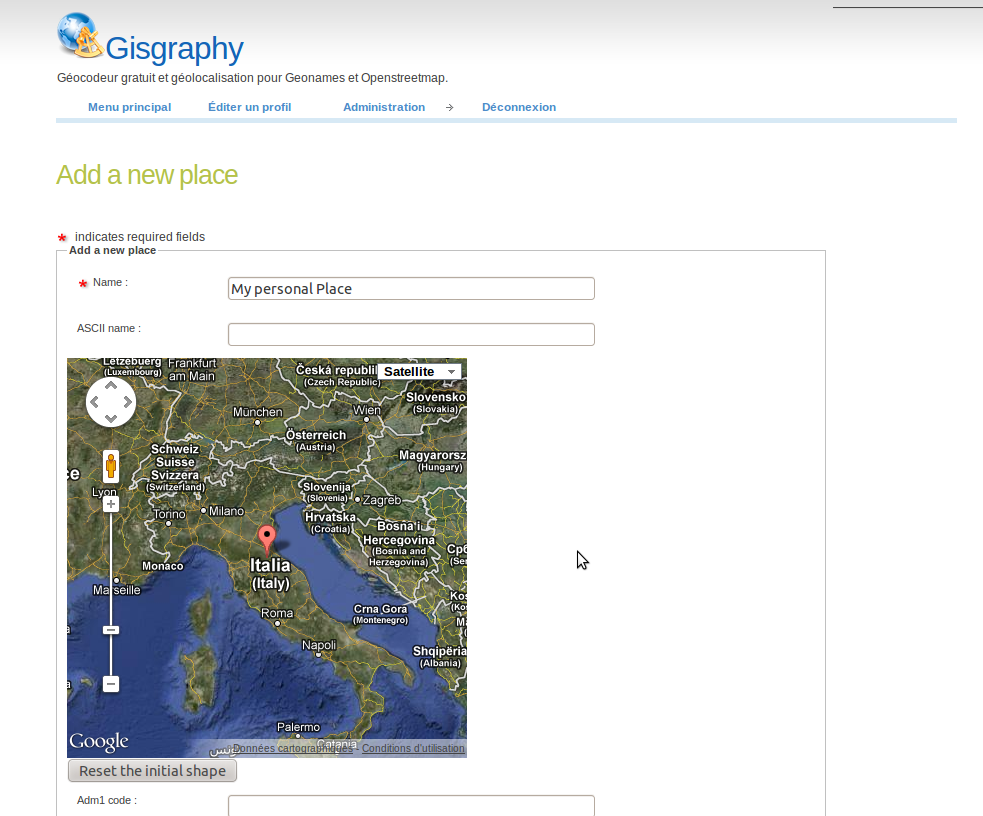

Table of content :
Introduction
Gisgraphy use free opensource data (Geonames and openstreetmap) but allows to add / edit your own place and streets. A friendly User interface allows to draw line or plot place directly on a map.To a Edit a particular street or place :
- Go to the main admin Page '/mainMenu.html'

- Choose the place or the street you want to add / edit, and click on the Edit button (note that if you click on the link, you will see the feature/street details)

Add / Edit street
A map is display, When you are on the edition form. The shape of the street is draw in red, so you can check the relevance of the shape. A marker of the middle of the street is displayed.
If you want to add a new segment to the existing shape, click on the map to plot a new point. A new segment will be added from the last point of the street to the new point. Repeat the operation to draw complex lines and curve. If you need to add some points to the beginning of the shape, delete the shape and draw your own lines.
Note that the marker of the middle of the street and the length is automatically updated. Don't forget to click on the save button.

If the existing shape is totally wrong and you want to draw your shape from scratch, click on 'Delete shape' and plot the points as described above. If the shape is partially wrong and you want to move some existing points, click on 'Edit points of the shape', All the points will be shown, then you move(drag with your mouse) them one by one. Once done click on 'Stop editing'. Don't forget to click on the save button.

At any time, If you've made mistakes or if the shape you've draw is not correct you can restore the initial shape by clicking 'Reset the initial shape'. If you add a new street, it will delete the shape already draw
TIPS : If you need to be precise, you can zoom in/out the map put your mouse on the location you want to zoom and scroll with the wheel of your mouse, or simply use the zoom level display on the map.
Add / edit place
A map is display, When you are on the form to add or edit a feature. If you edit a place, A marker is plot on the map to show the current position.
If you want to move the place, simply click on the map to move the point.
At any time, if you've made a mistake, you can restore the initial point by clicking the 'Reset initial shape' button.
If you add a new place, a marker is present by default and the map is zoom out.

TIPS : If you need to be precise, you can zoom in/out the map put your mouse on the location you want to zoom and scroll with the wheel of your mouse, or simply use the zoom level display on the map.